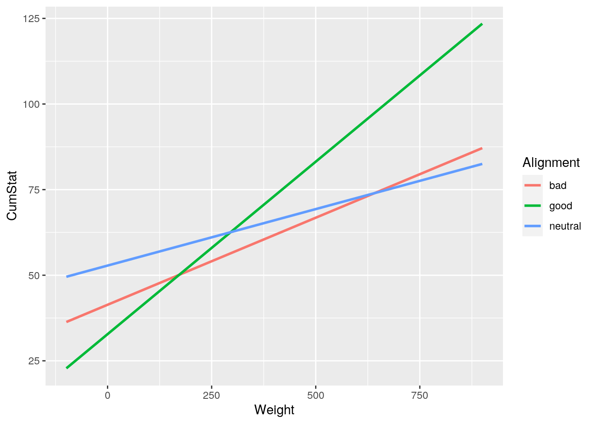

I have decided to use my joined dataset of Marvel and DC Comic characters from the last project. The main variables i want focus on in this project are the alignment of the characters(whether they are are good, bad or neutral) publisher (Marvel or DC) and their performance stats; intelligence, strength, speed, durabilty, power, and combat. the perfomance stats are weighted stats ou tof 100 for each character. There are 503 characters in the dataset and i will see if there are any connection btween these stats and their alignment and or publisher.
library(tidyverse)
chr_stats <- read_csv("~/lab/charcters_stats.csv")
chr_bio <- read_csv("~/lab/marvel_characters_info.csv")
chr_bio <- chr_bio %>% filter(Publisher %in% c("Marvel Comics",
"DC Comics"))
full_chrdata <- inner_join(chr_bio, chr_stats, by = "Name")
full_chrdata <- full_chrdata %>% select(-Alignment.y)
full_chrdata <- full_chrdata %>% rename(Alignment = Alignment.x)
full_chrdata <- full_chrdata %>% distinct(Name, .keep_all = T)
full_chrdata$Alignment[full_chrdata$Alignment == "-"] <- "neutral"
full_chrdata$Gender[full_chrdata$Gender == "-"] <- "Non-gendered"
full_chrdata$Race[full_chrdata$Race == "-"] <- "Unkown"
full_chrdata <- full_chrdata %>% mutate(CumStat = Total/6)
full_chrdata <- full_chrdata %>% relocate(CumStat, .after = Weight)
full_chrdata## # A tibble: 503 x 19
## ID Name Alignment Gender EyeColor Race HairColor Publisher SkinColor
## <dbl> <chr> <chr> <chr> <chr> <chr> <chr> <chr> <chr>
## 1 0 A-Bo… good Male yellow Human No Hair Marvel C… -
## 2 2 Abin… good Male blue Unga… No Hair DC Comics red
## 3 3 Abom… bad Male green Huma… No Hair Marvel C… -
## 4 4 Abra… bad Male blue Cosm… Black Marvel C… -
## 5 7 Adam… good Male blue Human Blond DC Comics -
## 6 9 Agen… good Male brown Human Brown Marvel C… -
## 7 10 Agen… good Male - Unko… - Marvel C… -
## 8 11 Air-… bad Male blue Unko… White Marvel C… -
## 9 13 Alan… good Male blue Unko… Blond DC Comics -
## 10 16 Alfr… good Male blue Human Black DC Comics -
## # … with 493 more rows, and 10 more variables: Height <dbl>, Weight <dbl>,
## # CumStat <dbl>, Intelligence <dbl>, Strength <dbl>, Speed <dbl>,
## # Durability <dbl>, Power <dbl>, Combat <dbl>, Total <dbl>library(rstatix)
group <- full_chrdata$Alignment
DVs <- full_chrdata %>% select(Strength, Speed, Intelligence,
Combat, Power, Durability)
# Test multivariate normality for each group (null:
# assumption met)
sapply(split(DVs, group), mshapiro_test)## bad good neutral
## statistic 0.9474137 0.9385322 0.6517388
## p.value 3.322821e-05 1.022554e-10 2.310125e-05man1 <- manova(cbind(Speed, Intelligence, Strength, Durability,
Power, Combat) ~ Alignment, data = full_chrdata)
summary(man1)## Df Pillai approx F num Df den Df Pr(>F)
## Alignment 2 0.069347 2.9693 12 992 0.000438 ***
## Residuals 500
## ---
## Signif. codes: 0 '***' 0.001 '**' 0.01 '*' 0.05 '.' 0.1 ' ' 1summary.aov(man1)## Response Speed :
## Df Sum Sq Mean Sq F value Pr(>F)
## Alignment 2 4125 2062.57 3.1225 0.04491 *
## Residuals 500 330274 660.55
## ---
## Signif. codes: 0 '***' 0.001 '**' 0.01 '*' 0.05 '.' 0.1 ' ' 1
##
## Response Intelligence :
## Df Sum Sq Mean Sq F value Pr(>F)
## Alignment 2 13986 6992.9 6.8728 0.001136 **
## Residuals 500 508741 1017.5
## ---
## Signif. codes: 0 '***' 0.001 '**' 0.01 '*' 0.05 '.' 0.1 ' ' 1
##
## Response Strength :
## Df Sum Sq Mean Sq F value Pr(>F)
## Alignment 2 19104 9552.2 8.8513 0.0001669 ***
## Residuals 500 539594 1079.2
## ---
## Signif. codes: 0 '***' 0.001 '**' 0.01 '*' 0.05 '.' 0.1 ' ' 1
##
## Response Durability :
## Df Sum Sq Mean Sq F value Pr(>F)
## Alignment 2 23724 11862.1 9.2726 0.0001111 ***
## Residuals 500 639636 1279.3
## ---
## Signif. codes: 0 '***' 0.001 '**' 0.01 '*' 0.05 '.' 0.1 ' ' 1
##
## Response Power :
## Df Sum Sq Mean Sq F value Pr(>F)
## Alignment 2 12330 6165.0 5.2755 0.005404 **
## Residuals 500 584307 1168.6
## ---
## Signif. codes: 0 '***' 0.001 '**' 0.01 '*' 0.05 '.' 0.1 ' ' 1
##
## Response Combat :
## Df Sum Sq Mean Sq F value Pr(>F)
## Alignment 2 6326 3163.2 3.056 0.04796 *
## Residuals 500 517553 1035.1
## ---
## Signif. codes: 0 '***' 0.001 '**' 0.01 '*' 0.05 '.' 0.1 ' ' 1pairwise.t.test(full_chrdata$Intelligence, full_chrdata$Alignment,
p.adj = "none")##
## Pairwise comparisons using t tests with pooled SD
##
## data: full_chrdata$Intelligence and full_chrdata$Alignment
##
## bad good
## good 0.00086 -
## neutral 0.56798 0.04881
##
## P value adjustment method: nonepairwise.t.test(full_chrdata$Strength, full_chrdata$Alignment,
p.adj = "none")##
## Pairwise comparisons using t tests with pooled SD
##
## data: full_chrdata$Strength and full_chrdata$Alignment
##
## bad good
## good 0.00079 -
## neutral 0.14694 0.00393
##
## P value adjustment method: nonepairwise.t.test(full_chrdata$Speed, full_chrdata$Alignment, p.adj = "none")##
## Pairwise comparisons using t tests with pooled SD
##
## data: full_chrdata$Speed and full_chrdata$Alignment
##
## bad good
## good 0.306 -
## neutral 0.058 0.017
##
## P value adjustment method: nonepairwise.t.test(full_chrdata$Durability, full_chrdata$Alignment,
p.adj = "none")##
## Pairwise comparisons using t tests with pooled SD
##
## data: full_chrdata$Durability and full_chrdata$Alignment
##
## bad good
## good 0.00350 -
## neutral 0.02852 0.00054
##
## P value adjustment method: nonepairwise.t.test(full_chrdata$Power, full_chrdata$Alignment, p.adj = "none")##
## Pairwise comparisons using t tests with pooled SD
##
## data: full_chrdata$Power and full_chrdata$Alignment
##
## bad good
## good 0.0351 -
## neutral 0.0773 0.0071
##
## P value adjustment method: nonepairwise.t.test(full_chrdata$Combat, full_chrdata$Alignment,
p.adj = "none")##
## Pairwise comparisons using t tests with pooled SD
##
## data: full_chrdata$Combat and full_chrdata$Alignment
##
## bad good
## good 0.173 -
## neutral 0.112 0.028
##
## P value adjustment method: noneHere i performed one manova, six anovas and six t-tests making my new bonferroni p-value 0.0038. i performed a one way manova to see if alignment had an effect on the 6 dependent variables intelligence, strength, speed, durabilty, power, and combat to reveal that a least one of the dependent variables significantly vaired among good, bad and neutral characters. after performing the one-way anovas i found that only Intellingence, Strength, and Durabilty to be siginificant. in the post hoc analysis to see wich alignments differed amonthese three three depedent variables good and bad characters variaed significantly in intelligence and Strength. good characters also varied from netral and bad characters in durabilty. when testing the assumptions of my manova test i reject the null hypothesis of multivariate normality for each group so i violated manova assumptions from the begining.
# im sorry i just couldnt figure this outlibrary(sandwich)
library(lmtest)
full_chrdata <- full_chrdata %>% mutate(MCW = full_chrdata$Weight -
mean(full_chrdata$Weight))
fitp <- lm(CumStat ~ MCW * Alignment, data = full_chrdata)
residp <- lm(CumStat ~ MCW * Alignment, data = full_chrdata)$residuals
fittedp <- lm(CumStat ~ MCW * Alignment, data = full_chrdata)$fitted.values
summary(fitp)##
## Call:
## lm(formula = CumStat ~ MCW * Alignment, data = full_chrdata)
##
## Residuals:
## Min 1Q Median 3Q Max
## -74.961 -21.977 2.551 16.003 71.857
##
## Coefficients:
## Estimate Std. Error t value Pr(>|t|)
## (Intercept) 44.93346 2.13077 21.088 < 2e-16 ***
## MCW 0.05084 0.01386 3.668 0.000271 ***
## Alignmentgood -5.08863 2.53271 -2.009 0.045060 *
## Alignmentneutral 10.19410 6.94536 1.468 0.142803
## MCW:Alignmentgood 0.04991 0.01854 2.692 0.007343 **
## MCW:Alignmentneutral -0.01785 0.02990 -0.597 0.550776
## ---
## Signif. codes: 0 '***' 0.001 '**' 0.01 '*' 0.05 '.' 0.1 ' ' 1
##
## Residual standard error: 25.12 on 497 degrees of freedom
## Multiple R-squared: 0.1683, Adjusted R-squared: 0.1599
## F-statistic: 20.11 on 5 and 497 DF, p-value: < 2.2e-16ggplot(full_chrdata, aes(Weight, CumStat, color = Alignment)) +
geom_smooth(method = "lm", se = F, fullrange = T)
ks.test(residp, "pnorm", mean = 0, sd(residp))##
## One-sample Kolmogorov-Smirnov test
##
## data: residp
## D = 0.071475, p-value = 0.01172
## alternative hypothesis: two-sidedbptest(fitp)##
## studentized Breusch-Pagan test
##
## data: fitp
## BP = 26.821, df = 5, p-value = 6.18e-05ggplot() + geom_point(aes(fittedp, residp)) + geom_hline(yintercept = 0,
color = "red")coeftest(fitp, vcov = vcovHC(fitp))##
## t test of coefficients:
##
## Estimate Std. Error t value Pr(>|t|)
## (Intercept) 44.933465 2.393393 18.7740 < 2.2e-16 ***
## MCW 0.050841 0.013845 3.6720 0.0002667 ***
## Alignmentgood -5.088633 2.785000 -1.8272 0.0682757 .
## Alignmentneutral 10.194100 7.050768 1.4458 0.1488596
## MCW:Alignmentgood 0.049911 0.025870 1.9293 0.0542604 .
## MCW:Alignmentneutral -0.017850 0.024737 -0.7216 0.4708906
## ---
## Signif. codes: 0 '***' 0.001 '**' 0.01 '*' 0.05 '.' 0.1 ' ' 1samp_distn <- replicate(5000, {
boot_dat <- sample_frac(full_chrdata, replace = T)
fit <- lm(CumStat ~ MCW * Alignment, data = boot_dat)
coef(fit)
})
samp_distn %>% t %>% as.data.frame %>% summarize_all(sd)## (Intercept) MCW Alignmentgood Alignmentneutral MCW:Alignmentgood
## 1 2.347555 0.01442066 2.717858 6.948457 0.02369466
## MCW:Alignmentneutral
## 1 0.03779588in my linear egression of to predict cummulative stats from alignment and weight, i decided to mean center my numeric predictors before i ran the model. an intercept coefficient of 44.93346 means that when alignment is bad and MCW is at the mean the Cummaulative stats will be 44.93346 because algined as bad is the reference group . based on the other coeifficients the cummulative stats rise by .05084 when the mean centered weight goes up by one, lower by -5.08863 when alignment is is good, rise by 10.19410 when alignment is neutral, rise by .04991 when mean centered weight goes up by one and alignment is good, and down by .01785 when mean centered weight goes up by one and alignment is nuetral. when checking my assumptions the graph did show somewhat of a pattern and i rejected beth null hypothesis' of the bruech pagan and Kolmogorov-Smirnov test. this means assumptions of linearity normality and homeskedacisty were not met. Then i went on to calulate robust standard errors and bootstrapped standard errors for the model. rerunning the models with robust standard errors and bootstapped statard errors are still about the same, actually slightly lower than the statrdard error but not enough to where i would change the dtermination of the pavlues for thsi regression. the only two significant estimates were tthe intercept(alignment bad and mean cumstat) and MCW. the proportion of the data that can be explained by this model is .1683.
library(plotROC)
full_chrdata1 <- full_chrdata[!(full_chrdata$Alignment == "Nuetral"),
]
full_chrdata1 <- full_chrdata1 %>% mutate(y = ifelse(Alignment ==
"bad", 1, 0))
fitp1 <- glm(y ~ Publisher + CumStat, data = full_chrdata1, family = "binomial")
summary(fitp1)##
## Call:
## glm(formula = y ~ Publisher + CumStat, family = "binomial", data = full_chrdata1)
##
## Deviance Residuals:
## Min 1Q Median 3Q Max
## -1.0094 -0.8478 -0.7547 1.4361 1.8059
##
## Coefficients:
## Estimate Std. Error z value Pr(>|z|)
## (Intercept) -1.420348 0.246103 -5.771 7.86e-09 ***
## PublisherMarvel Comics 0.135258 0.214512 0.631 0.528
## CumStat 0.009255 0.003726 2.484 0.013 *
## ---
## Signif. codes: 0 '***' 0.001 '**' 0.01 '*' 0.05 '.' 0.1 ' ' 1
##
## (Dispersion parameter for binomial family taken to be 1)
##
## Null deviance: 598.69 on 502 degrees of freedom
## Residual deviance: 592.07 on 500 degrees of freedom
## AIC: 598.07
##
## Number of Fisher Scoring iterations: 4exp(coeftest(fitp1))##
## z test of coefficients:
##
## Estimate Std. Error z value Pr(>|z|)
## (Intercept) 0.24163 1.27903 0.0031 1.000
## PublisherMarvel Comics 1.14483 1.23926 1.8786 1.696
## CumStat 1.00930 1.00373 11.9861 1.013full_chrdata1$logss <- predict(fitp1, type = "link")
full_chrdata1 %>% mutate(Alignment = factor(y, levels = c("0",
"1"))) %>% ggplot(aes(logss, fill = Alignment)) + geom_density(,
alpha = 0.4)probsp <- predict(fitp1, type = "response")
table(predict = as.numeric(probsp > 0.5), truth = full_chrdata1$y) %>%
addmargins## truth
## predict 0 1 Sum
## 0 361 142 503
## Sum 361 142 503ROC <- ggplot(full_chrdata1) + geom_roc(aes(d = y, m = probsp),
n.cuts = 0)
ROCcalc_auc(ROC)## PANEL group AUC
## 1 1 -1 0.572188for my logistic rgression i wanted to see if publisher or cummulative stats could be an accurate predictor of alignment. in order to dummy code alignment into a binary i diecided to remove nutral characters so the binary would just be 1=bad and 0=good. the regression made dc comic the reference group for the model therefore the interepct estimate of .24163 means a .24163 higher chance of being bad. marvel comics estimate of 1.14483 would mean a 1.14483 higher chance that the character is bad.the cummulative stats estimate of 1.00930 would mean a 1.00930 higher chance of being bad per unit increase in cummulative stats.then i made logit plot to display the overlap, you can clearly see the model doesnt differenciate the two alignments very much. based on the confusion matrix the accuracy of the model is 361/503 or .718, the sensitivity is 361/503 or .718 and the specificity and precision are both 0. looking at the ROC curve you can see there is much area under the curve and the calulated AUC of .572188 is bad.
library(glmnet)
class_diag <- function(probs, truth) {
tab <- table(factor(probs > 0.5, levels = c("FALSE", "TRUE")),
truth)
acc = sum(diag(tab))/sum(tab)
sens = tab[2, 2]/colSums(tab)[2]
spec = tab[1, 1]/colSums(tab)[1]
ppv = tab[2, 2]/rowSums(tab)[2]
f1 = 2 * (sens * ppv)/(sens + ppv)
if (is.numeric(truth) == FALSE & is.logical(truth) == FALSE) {
truth <- as.numeric(truth) - 1
}
ord <- order(probs, decreasing = TRUE)
probs <- probs[ord]
truth <- truth[ord]
TPR = cumsum(truth)/max(1, sum(truth))
FPR = cumsum(!truth)/max(1, sum(!truth))
dup <- c(probs[-1] >= probs[-length(probs)], FALSE)
TPR <- c(0, TPR[!dup], 1)
FPR <- c(0, FPR[!dup], 1)
n <- length(TPR)
auc <- sum(((TPR[-1] + TPR[-n])/2) * (FPR[-1] - FPR[-n]))
data.frame(acc, sens, spec, ppv, f1, auc)
}
# Model
fitp2 <- glm(y ~ Publisher + Speed + Intelligence + Power + Durability +
Strength + Combat, data = full_chrdata1, family = "binomial")
summary(fitp2)##
## Call:
## glm(formula = y ~ Publisher + Speed + Intelligence + Power +
## Durability + Strength + Combat, family = "binomial", data = full_chrdata1)
##
## Deviance Residuals:
## Min 1Q Median 3Q Max
## -1.3513 -0.8036 -0.7066 1.2331 2.0478
##
## Coefficients:
## Estimate Std. Error z value Pr(>|z|)
## (Intercept) -1.419069 0.258221 -5.496 3.89e-08 ***
## PublisherMarvel Comics 0.150214 0.219749 0.684 0.49425
## Speed -0.010864 0.006074 -1.789 0.07369 .
## Intelligence 0.017421 0.005369 3.245 0.00117 **
## Power -0.002754 0.004943 -0.557 0.57745
## Durability 0.002974 0.005585 0.533 0.59437
## Strength 0.009672 0.004902 1.973 0.04848 *
## Combat -0.010780 0.005174 -2.083 0.03722 *
## ---
## Signif. codes: 0 '***' 0.001 '**' 0.01 '*' 0.05 '.' 0.1 ' ' 1
##
## (Dispersion parameter for binomial family taken to be 1)
##
## Null deviance: 598.69 on 502 degrees of freedom
## Residual deviance: 575.97 on 495 degrees of freedom
## AIC: 591.97
##
## Number of Fisher Scoring iterations: 4probap <- predict(fitp2, type = "response")
class_diag(probap, full_chrdata1$y)## acc sens spec ppv f1 auc
## 1 0.7256461 0.06338028 0.9861496 0.6428571 0.1153846 0.6277164# 10 fold
k = 10
data <- full_chrdata1 %>% sample_frac
folds <- ntile(1:nrow(data), n = 10)
diags <- NULL
for (i in 1:k) {
train <- data[folds != i, ]
test <- data[folds == i, ]
truth <- test$y
fit <- glm(y ~ Publisher + Speed + Intelligence + Power +
Durability + Strength + Combat, data = train, family = "binomial")
probs <- predict(fit, newdata = test, type = "response")
diags <- rbind(diags, class_diag(probs, truth))
}
summarize_all(diags, mean)## acc sens spec ppv f1 auc
## 1 0.7159216 0.06158175 0.9731638 NaN NaN 0.6113659# Lasso
project_preds <- model.matrix(fitp2)[, -1]
y <- as.matrix(full_chrdata1$y)
cv <- cv.glmnet(project_preds, y, family = "binomial")
lasso_fit <- glmnet(project_preds, y, family = "binomial", lambda = cv$lambda.1se)
coef(lasso_fit)## 8 x 1 sparse Matrix of class "dgCMatrix"
## s0
## (Intercept) -9.330509e-01
## PublisherMarvel Comics .
## Speed .
## Intelligence 5.311869e-18
## Power .
## Durability .
## Strength .
## Combat .# 10 Fold 2
diags <- NULL
for (i in 1:k) {
train <- data[folds != i, ]
test <- data[folds == i, ]
truth <- test$y
fit <- glm(y ~ Intelligence, data = train, family = "binomial")
probs <- predict(fit, newdata = test, type = "response")
diags <- rbind(diags, class_diag(probs, truth))
}
summarize_all(diags, mean)## acc sens spec ppv f1 auc
## 1 0.7178039 0 1 NaN NaN 0.6005385When running the larger regression i decided indidual sats that amke up cummulaitve stats instead of all of the varaibles becuase some of the variable in the set are nonsensical like ID#. the in-sample diagnositc for the model showed an accuracy of .726 which is okay, a senistivety of .0634 which is means is does not classify true bad characters accuratley, a specificty of .98 meaning it does characterise true good characters as good, a precision of .643 which means overall the model prediction okay, and an AUC of .627 meaning the model is bad.after perfoming the 10 fold cross validation out of sample diagnostics revealed a lower accuracy, specificty, and AUC but a alightly higher sensitivety. overall the ten fold cross validation took the model from poor to bad in terms of AUC, but this is expected as model made to predict itself will better than a model used on unseen test data. then i performed a LASSO on the models to see which predictors were most significant in determining alignment. the only predictor that reatined a coeffiecient was Intelligence. perfoming the lasso and only running the regression with Intellingence the accuracy, specificity and AUC rise slightly, while sensity goes down slightly. these slight changes make sense becuase even though intelligence is the only reatained variable its estimate was so low as to almost be insignificant.